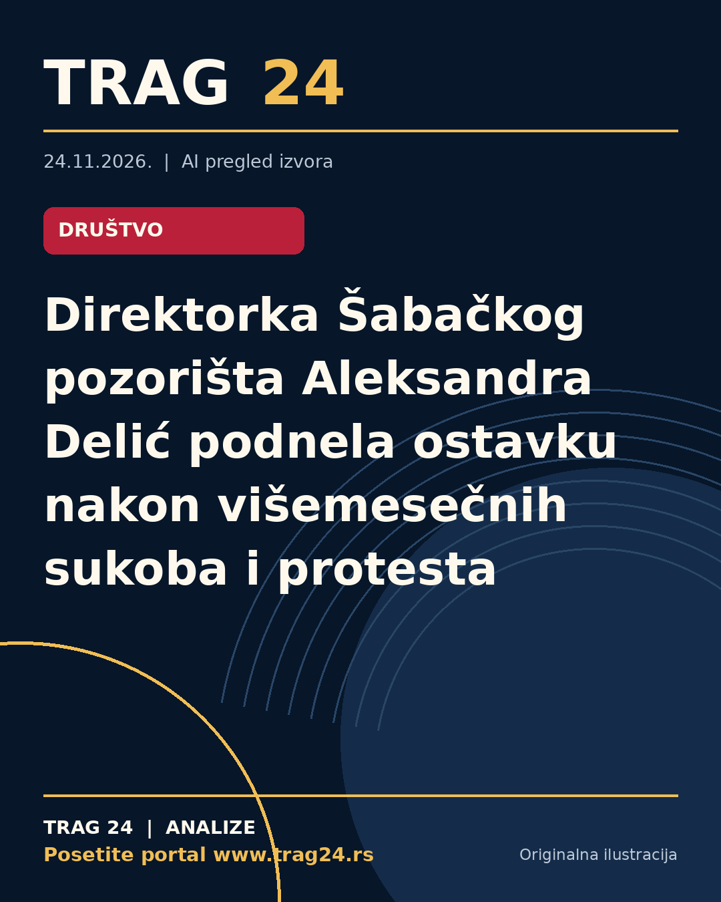

Direktorka Šabačkog pozorišta Aleksandra Delić podnela ostavku nakon višemesečnih sukoba i protesta

ŠTA SE DOGODILO
Aleksandra Delić, direktorka Šabačkog pozorišta, podnela je neopozivu ostavku na tu funkciju nakon više od 20 meseci tenzija i sukoba unutar pozorišta. Odlazak je usledio nakon dugotrajnih protesta zaposlenih i zahteva za njenom smenom, a vest o ostavci prvo je objavljena u medijima, a zatim i putem oglasne table pozorišta.
HRONOLOGIJA
Sukobi u Šabačkom pozorištu su započeli još u aprilu 2025. godine kada je Delić imenovana za direktoricu, a zaposleni su od samog početka izrazili nezadovoljstvo zbog njenog rada i tvrdnji da je njen izbor politički motivisan i bez potrebnih stručnih kvalifikacija. U toku ovog perioda sindikat "Nezavisnost" zajedno s većinom glumaca i zaposlenih organizovao je seriju štrajkova upozorenja, zahtevao poništavanje izmena pravilnika o sistematizaciji poslova i vraćanje na posao otpuštene organizatorke Jelene Ivetić. Ova otkazana koleginica tuži Delić zbog, kako navodi, nezakonitog otkaza.
ŠTA NAVODE IZVORI
Delić u saopštenju navodi da ne prihvata neistine koje su o njoj iznošene i da je svoj posao obavljala savesno, svesna odgovornosti prema zajednici. Ističe da odlazi mirne savesti i da je ponosna na postignuća u teškim okolnostima. Sindikat "Nezavisnost" ocenjuje da je odlazak zakasnio jer se broj problema nagomilao tokom godina, upozoravajući da razlog sukoba nisu samo smene, već i potreba za promenom sistema upravljanja i rešavanjem problema unutar pozorišta. Predstavnici sindikata podsećaju da zaposleni nisu iznosili neistine i da će koristiti sva dozvoljena sredstva da ukažu na ključne probleme poput neispravne sistematizacije, položaja Jelene Ivetić, devastiranog repertoara i loše komunikacije unutar ustanove. Studenti u blokadi pozdravljaju ostavku kao čin preuzimanja odgovornosti, ali ukazuju da je trebalo da se desi ranije i kritikuju način na koji je Delić predstavila situaciju u svom saopštenju.
ŠTA JE POTVRĐENO
Potvrđeno je da je Aleksandra Delić podnela ostavku na mesto direktorke Šabačkog pozorišta. Sindikat "Nezavisnost" i deo kolektiva su javno podržali svoje zahteve i ukazali na probleme u pozorištu. Takođe je potvrđeno da je otkaz Jelene Ivetić predmet sudskog postupka i da postoje duboki sukobi unutar pozorišta, uključujući i nepostojanje komunikacije sa Upravnim odborom i predstavnicima grada. Zasedanje Skupštine grada Šapca zakazano je za 25. novembar 2026. godine, kada se očekuje imenovanje novih funkcionera.
ŠTA NIJE POTVRĐENO
Nije potvrđeno ko će biti novi direktor ili koja će konkretna rešenja grad Šabac i Uprava pozorišta doneti povodom zahteva zaposlenih i sindikata. Nije zvanično potvrđeno da li će sledeći izbor direktora biti osoba iz kolektiva ili struke, niti da li će se promeniti sistemski problemi navodni tokom prethodnog perioda. Takođe nisu potvrđene sve navodne nepravilnosti vezane za imenovanje Aleksandre Delić, osim što se navedene tvrdnje preispituju i očekuje se ispitivanje nadležnih institucija.
ŠTA OSTАJE OTVORENO: Ostaje da se vidi hoće li ostavka Aleksandre Delić dovesti do suštinskih promena u radu Šabačkog pozorišta i da li će grad Šabac imenovati novo rukovodstvo u skladu sa zakonskim propisima i preporukama zaposlenih. Takođe je neizvesno kako će biti rešeni zahtevi o vraćanju koleginice Jelene Ivetić na posao, poništavanju štetnih izmena sistematizacije, kao i pitanja komunikacije i raspodele radnih zadataka unutar teatra. Status daljeg rada i unutrašnje klime u pozorištu i dalje zavisi od podrške i volje novih upravljačkih struktura i njihovog odnosa prema zahtevima sindikata i zaposlenih.
Izvori
- https://radar.nova.rs/kultura-radar/aleksandra-delic-podnela-ostavku/
- https://www.masina.rs/direktorka-sabackog-pozorista-podnela-ostavku-nadamo-se-da-ova-ostavka-nece-biti-samo-kozmeticka/
- https://vreme.com/kultura/kraj-jedne-krize-direktorka-sabackog-pozorista-podnela-ostavku/
Ova analiza je pripremljena uz pomoć veštačke inteligencije na osnovu javno dostupnih izvora. Navodi izvora nisu nužno nezavisno potvrđeni.